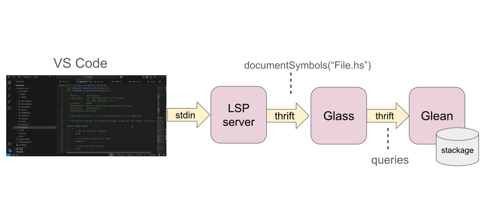

Browsing Stackage with VS Code and Glean
June 11, 2025Have you ever wished you could browse all the Haskell packages together in your IDE, with full navigation using go-to-definition and find-references? Here’s a demo of something I hacked together while at ZuriHac 2025 over the weekend:
In the previous post I talked about how to index all of Hackage (actually Stackage, strictly speaking, because it’s not in general possible to build all of Hackage together) using Glean. Since that post I made some more progress on the indexer:
The indexer now indexes types. You can see type-on-hover working in the demo. The types are similar to what you see in the Haddock-generated hyperlinked source, except that here it’s always using the type of the definition and not the type at the usage site, which might be more specific. That’s a TODO for later.
Fixed a bunch of things, enriched the index with details about constructors, fields and class methods, and made indexing more efficient.
The DB size including types is now about 850MB, and it takes just under 8 minutes on my 9-year-old laptop to index the nearly 3000 packages in my stackage LTS 21.21 snapshot. (Note: the figures here were updated on 12-06-2025 when I redid the measurments).
Hooking it up to VS Code
The architecture looks like this:

The LSP server is a modified version of static-ls, which is already designed to provide an LSP service based on static information. I just reimplemented a few of its handlers to make calls to Glass instead of the existing hie/hiedb implementations. You can see the changes on my fork of static-ls. Of course, these changes are still quite hacky and not suitable for upstreaming.
Glass is a “Language-agnostic Symbol Server”. Essentially it provides an API abstraction over Glean with operations that are useful for code navigation and search.
Where to next?
There remain a few issues to solve before this can be useful.
Make Glean more easily installable. There’s a general concensus that
cabal install gleanwould lower the barrier to entry significantly; in order to do this we need to build the folly dependency using Cabal.Clean up and ship the LSP server, somehow. Once Glean is cabal-installable, we can depend on it from an LSP server package.
Think about continuous integration to build the Glean DB. Perhaps this can piggyback off the stackage CI infra? If we can already build a complete stackage snapshot, and Glean is easily installable, then indexing would be fairly straightforward. I’d love to hear suggestions on how best to do this.
And looking forwards a bit further:
Think about how to handle multiple packages versions. There’s no fundamental problem with indexing multiple package versions, except that Glass’s SymbolID format currently doesn’t include the package version but that’s easily fixable. We could for example build multiple stackage LTS instances and index them all in a single Glean DB. There would be advantages to doing this, if for instance there were packages in common between two Stackage instances then the Glean DB would only contain a single copy. A lot of the type structure would be shared too.
Provide search functionality in the LSP. Glean can provide simple textual search for names, and with some work could also provide Hoogle-like type search.
Think about how to index local projects and local changes. Glean supports stacked and incremental DBs, so we could build a DB for a local project stacked on top of the full Stackage DB. You would be able to go-to-definition directly from a file in your project to the packages it depends on in Stackage. We could re-index new
.hiefiles as they are generated, rather like how static-ls currently handles changes.Integrate with HLS? Perhaps Glean could be used to handle references outside of the current project, switching seamlessly from GHC-based navigation to Glean-based navigation if you jump into a non-local package.
More use cases?
I talked with a few people at ZuriHac about potential use cases for
Glean within the Haskell ecosystem. Using it in haskell.org came up
a few times, as a way to power search, navigation and analysis. Also
mentioned was the possibility of using it as a Hoogle
backend. Potentially we could replace the Haddock-generated
hyperlinked sources on haskell.org with a Glean-based browser, which
would allow navigating links between packages and find-references.
Another use cases that came up was the possibility of doing impact analysis for core library changes (or any API changes really). Some of this is already possible using find-references, but more complex cases such as finding instances that override certain methods aren’t possible yet until we extend the indexer to capture richer information.
If you’re interested in using Glean for something, why not jump on the Glean discord server and tell us about it!